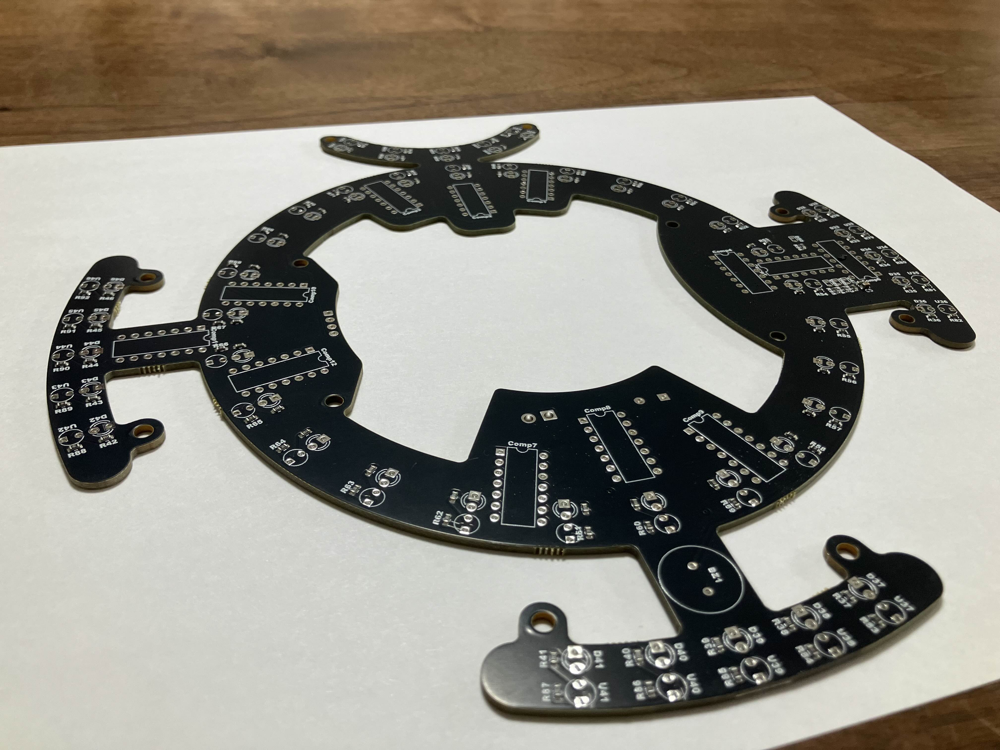
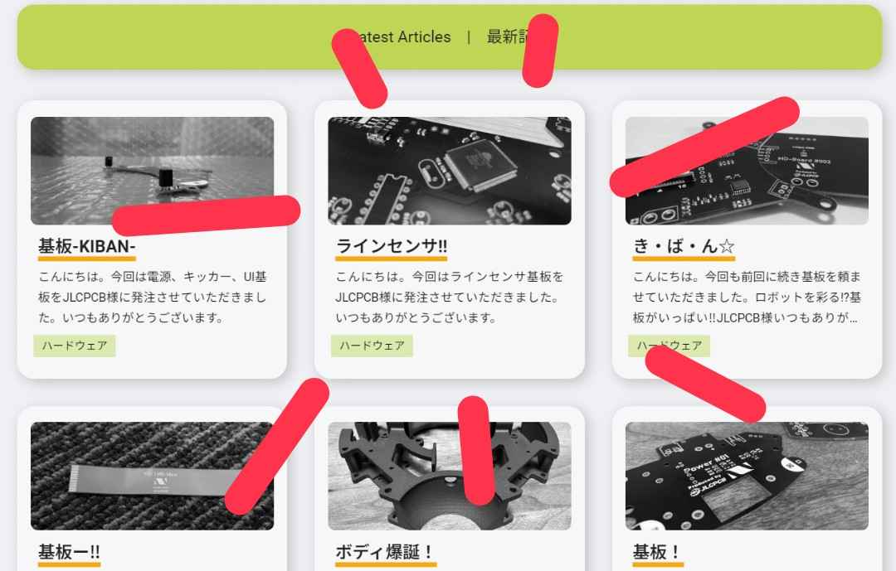
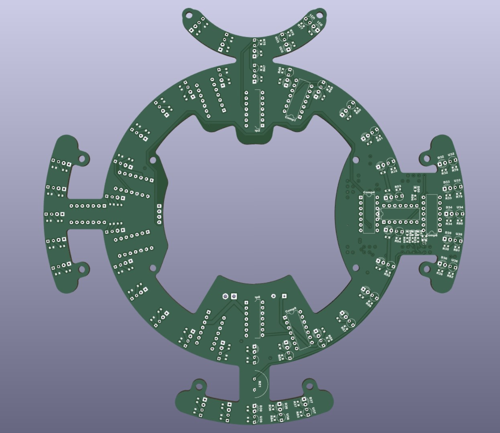
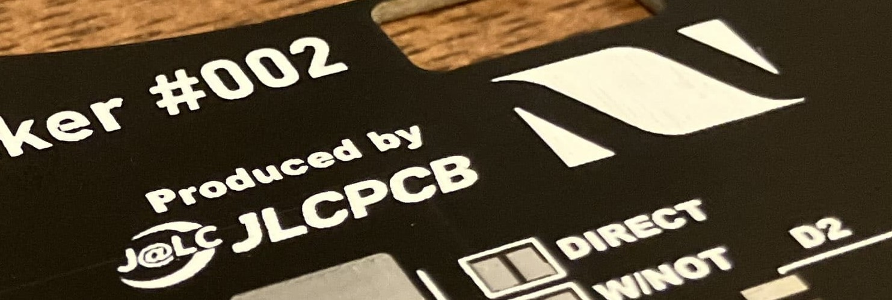

TOINIOT² Blog
ラインセンサ-2-
2024-10-26 Writer: 010
こんにちは。今日もJLCPCB様に基板を発注させてもらったお話。今回は…ラインセンサ基板です。

ん…?

1か月前にも同じ記事書いてるね…
いやいくら何でも同じ基板頼みすぎやr(殴
ブログ担当の僕(010)からすると勘弁してくれっていう感じ(←何にもやってないやつが偉そうな口叩くなby nearfactory)なのですが設計班いわくそれ相応の理由があるようで…
結論から申し上げますと、動かなかったらしいです。全く。詳しい原因は調査中だそうですが、ラインセンサのマイコンをチップに変更したことが絡んでいるみたい。
ということで今回はマイコンを従来通りのものに戻したものを発注。現在絶賛はんだ祭り中ですが、直視できない神々しい姿(物理)になる日もそう遠くはないでしょう。
さて、基板の詳しい説明に入る前にいつもお世話になっているJLCPCB様について紹介したいと思います。
JLCPCBは主に基板製作を手掛けている会社です。しかし、それだけではなく、3DプリントやCNC加工なども行っており、彼らに作れないものはない！と言っても過言ではありません。
そして、JLCPCB最大の特徴は「安い」「早い」「正確」の3拍子がそろっていること。商品自体は1$から発注可能、工場は海外にあるのに、空輸とはいえ発注から2週間かからずでの到着はかなり魅力的です。
しかもこの2週間とはあくまでも通常配達での話。速達サービスを使えば数日で届きます。1週間もかかりません。ここでもう一度言っておきます。出荷元は海外です！日本ではありません‼凄すぎ…
もちろん、確立された機械生産によって不良品に当たる可能性はほとんどなく、少なくても僕たちは一度も遭遇していません(僕たちの設計ミスはたくさんありましたが(笑))。
あとそうそう、オペレーターの方がメールで注文内容について応対してくれるのも推しポイント!!以前僕たちが頼ませていただいた基板の中に構造上貧弱になっている箇所があったのですが、このままでは危ないこと、解決策などを提案していただき事なきを得ました。
しかも全部無料で…!(*'▽')
今ならクーポンもゲットできるみたいです。
この機会をお見逃しなく！！

↓JLCPCB様のHP
https://jlcpcb.jp/
↓クーポンゲットのチャンス！
・新規ユーザー$60クーポン
https://jlcpcb.com/JPV
・その他のクーポン
https://jlcpcb.jp/coupon-center?from=6layer
では基板について色々説明を。
このラインセンサはT(I)字4方向型とエンジェルリングを組み合わせた形になっています。
いやどっちかでよくないってつっこまれそうですがこれにはわけがありまして…
まず、それぞれの方式のメリットデメリットを整理します。
①T(I)字4方向型
【メリット】
・構造がシンプル
・同じ方向にセンサが連なっているので、万が一1つが反応しなくても残りが代わりに反応してれる(=アウトオブバウンズのリスクが低い)
【デメリット】
・複雑なプログラムは組みづらい(普通は1方向のかたまりを1つのセンサとして認識されるのでプログラム上は4方向に各1個ずつあるに過ぎない。
去年は二十数個のセンサ1つひとつが独立するような基板にしたので、1つのブロックをさらに分けて外側半分が反応すれば〇〇…みたいな感じでGKの複雑な動きにも対応しましたがやりずらいことには変わりないです。)
②エンジェルリング型
【メリット】
・独立したセンサが円形状に配置されているので、ロボットがどこでどのように白線を踏もうと反応する
・その踏み方によって常に最適な角度の回避行動を算出できる
【デメリット】
・プログラムはちょっとめんどい(sincosθは必須)
・T(I)字4方向型よりも同じ動作で反応するセンサの数は少ない(高速だとアウトするリスクが上がる)
とまあざっくりこんな感じです。
強いて言うならエンジェルの方が若干いいような気もしますがどちらにせよ両方完璧ではありません。
じゃあこの2つ組み合わせたらメリットだけになるじゃーん♪(そんなことはない)で生まれたのがこれ…ということです笑
ただこの構造にも少々問題がありまして、どうしてもボールが入るくぼみがある前には補助のセンサはつけられないんですよね。
やるとしたらエンジェルの円を小さくすれば、なんとか…でもそれだとエンジェルの利点が生かせなくなるんだよなー。
去年のルール改定後の新コートは、左右の白線と壁の距離は狭いですが、前後は以前よりも広くなったペナルティーエリアがあるので今回は妥協点としました。
形についてはこれくらいとして、もう一つ僕たちがお話したいのが基板への文字のプリント(シルクスクリーン)。
JLCPCB様に基板を頼ませていただくと当たり前のようにできるので今まで触れるのをすっかり忘れていましたが、すごくありがたいサービスなんです。
基板にはあとから様々な部品を取り付けますが、当然その場所は決まっています。
しかし、はんだ前の基板を見ても目の前に広がるのは穴、穴、穴…。小さいものならともかく、今回頼ませていただいたような大がかりな基板だと、一見何をどこにつければいいのかわかりません。
もちろん、設計データを見ればすむと言えばそれまでですが、一度に全部を覚えるのは難しいですし、覚えていてもミスが起きないとは断言できません。
もしもミスがあればせっかくの基板がおじゃんになります。というか基板だけで済めばラッキーレベル。気づかずに使ってショートでもすればもはや大惨事では片づけられないでしょう。
その点、基板に直接具体的な指示が書かれているのは本当に安心ですし、トラブル発生時の対応にも役に立ちます。自作ではできないことを無料でやってくれるJLCPCB様には本当に感謝ですね。

↑左がシルクスクリーンなし、右がありバージョン。こうして比べるとその差は一目瞭然です。
そうそう、これ以外にもこのサービスのおすすめの活用法がありまして、それはチームのロゴを印刷すること。
一気にオリジナル感が出ますし何よりかっこいいので基板のサイズに余裕があればぜひお試しを。

さて、今回はここまで。
最後までご覧いただきありがとうございました。